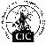
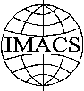
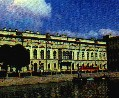

| Mirrors: Steklov Institute of Mathematics at St.Petersburg, Russia and UNM, Albuquerque, USA |

| St. Petersburg, Russia, | June, 25-28, 2000 |
|  |
|
General Chair: Nikolay Vassiliev
Program Chairs: Victor Edneral, Richard Liska, Michael Wester
Organizing Committee: Stanly Steinberg, Michael Wester, Yuri Matiyasevich, Anatoly Vershik
Local Arrangements: Elena Novikova, Nikolay Mnev, Vyacheslav Nesterov, Sergei Slavyanov
Scientific Committee:
Bruno Buchberger RISC-Linz, Jacques Calmet Univ. of Karlsruhe,
Arieh Cohen Eindhoven Univ.Tech, Rob Corless Univ. of Western
Ontario, Andre Deprit Ntl. Bureau of Standarts, Sam Dooley IBM
Yorktown Heights, Keith Geddes Univ. of Waterloo, Vladimir Gerdt
Institute of Nuclear Res., Gaston Gonnet Zurich, Richard Jenks
IBM Yorktown Heights, Erich Kaltofen N. Carolina State Univ., Deepak
Kapur Univ. of New Mexico, Ilias Kotsireas ORCCA-Univ. of
Western Ontario, Wolfgang Kuechlin Univ. of Tuebingen,
Bernard Kutzler BK Techware, Luis Laita Univ. Politecnica Madrid,
Richard Liska Tech. Univ. Prague, Yuri Matiyasevich Steklov Inst.
of Math. St. Petersburg, Alexander Michalev Moscow State Univ., Michael
Monagan Simon Fraser Univ., Matu-Tarow Noda Ehime Univ., Mohamed
O. Rayes Texas Instruments Dallas, Tomas Recio Univ. de Cantabria,
Eugenio Roanes-Lozano Univ. Complutense de Madrid, Tateaki Sasaki
Univ. of Tsukuba, Stanly Steinberg Univ. New Mexico, David Stoutemeyer
Soft. Warehouse, Nikolay Vassiliev Steklov Inst. of Math. St.
Petersburg, Anatoli Vershik Steklov Inst. of Math. St. Petersburg,
Emil Volcheck National Security Agency, Volker Weispfenning
Passau, Franz Winkler J.Kepler Univ. Linz
Contents:
|
 |
If you want to organise a special session please contact to the
program chairs.
If you are interested in further information please register in
Mailing list.
Please take into account that usually every foreign visitor to Russia should get a VISA at the Russain Consulate in his own place. We shall send a special invitation to apply for a visa, but you should fill in our Registration Form in time (the procedure could takes about a month).
Further information about IMACS is available as well as information on joining IMACS and the ACA Technical Group and IMACS web page .